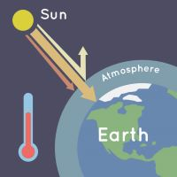

Climate Change
What is climate change?

Climate change is the change of earth's conditions, such as temperature and rainfall, in a region over a long duration of time.
Why is it so Harmful?
- Rising sea levels
- Shrinking mountain glaciers
- Ice melting at a faster rate in low temperature areas
The Greenhouse Effect
The gases in Earth's environment are trapping the sun's heat in our atmosphere, part of which makes earth so sustainable. However,
burning fossil fuels such as coal and oil produce more carbon dioxide into the atmosphere causing the temperature of earth to rise.
extra green house gases such as carbon dioxide and methane cause earth to trap more and more heat
Earth's surface warms up in the sunlight. At night, Earth's surface cools, releasing heat back into the air. But some of the heat is trapped by the greenhouse gases in the atmosphere. That's what keeps our Earth a warm and cozy 58 degrees Fahrenheit (14 degrees Celsius), on average.
if the climate were to increase 2 degrees celsius since fossil fuels were discovered - spike in mass migration, wildfires, deathly heat stress
What are we currently doing?
Green New Deal?
14 page first steps documentation - what we need to do to solve the climate crisis
- Stop burning fossil fuels
- Rethinking vehicles
- Electric cars
- Energy efficiency standards for building
- Changing the ways we make steel and concrete
- Locally grown food
- Building things that will power the world to replace fossil fuels - will create new jobs
The second part of the Green New Deal - how the people will be protected
- the fossil fuel industry and the carbon industry and every industry that is causing greenhouse gases - it is too late to increment them slowly out of society - it will be a sharp and strict turn away
- 0 carbon emissions, 0 fossil fuel emissions
- People will lose their jobs, health-care, etc..
- Jobs guarenteed
- Public employment
- Universal health-care
- Providing training and high-quality education
GND is a longshot- however it is the only plan that acknowledges our climate's future
- Won't pass the Senate
- People say there is no way to pay for it
Immigration Policy
Who we are and what we do.